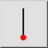
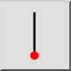
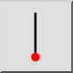
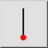

Verticale lijn
Werkbalk / icoon:
 

Menu: Tekenen > Lijn > Verticale lijn
Sneltoets: L, V
Opdrachten: linevertical | lv
Dit is een automatische vertaling.
Werkbalk / icoon:
 

Menu: Tekenen > Lijn > Verticale lijn
Sneltoets: L, V
Opdrachten: linevertical | lv
Gebruik dit functie om verticale lijnen te creëren. Dit functie wordt gebruikt zoals de functie voor lijnen met een bepaalde hoek, behalve dat de hoek verticaal is vastgelegd.